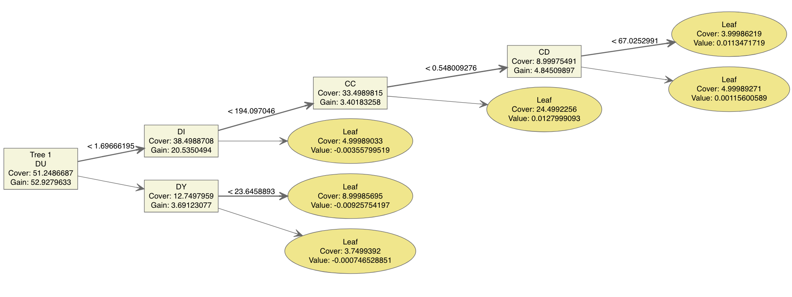
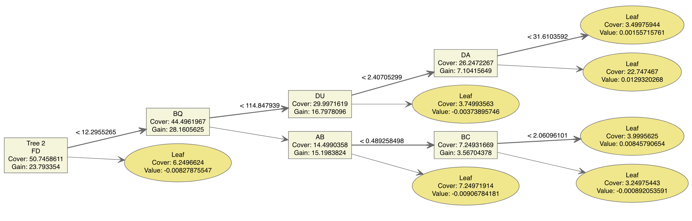

ICR - Identifying Age Related Diseases
Peter Dimler
2023-06-14
Project Details
Overview
On May 11th, 2023, Kaggle opened the “ICR - Identifying Age-related Conditions” code competition wherein competitors were asked to use machine learning models to precisely predict a person’s risk of having an age related condition using non-invasive health characteristics. The hope for the competition was to discover methods with strong predictive potential that could identify patients with a high risk of having an age related disease thereby helping doctors intervene. This would drastically improve the existing methodology for diagnosis and treatment which relies on long and intrusive patient data collection procedures.
The case study selected for the contest focused on predicting if a patient had one of 3 anonymized age related conditions (B, D, and G) using 56 anonymized health characteristics. Each patient had a unique Id as well as a Class which was 0 if the patient did not have condition B, D, or G and 1 if they had been diagnosed with one of the 3 conditions. The task amounted to building a model that predicted both the class of a patient (0 or 1) as well as the probability of belonging to the predicted class. The link to the competition webpage is provided below:
Motivation & Model Evaluation
The Kaggle competition Webpage notes that as a person’s age increases, so does their risk of developing new health issues. These health issues range from more manageable ailments such as hearing loss and mild arthritis to life threatening conditions such as heart disease. Diseases like these are great candidates for the ongoing research in disease intervention that is being conducted in the growing field of Bioinformatics. One goal of disease intervention is to detect a disease using non-invasive health characteristics and begin treatment before severe conditions develop. In this scenario, any model(s) used to predict if a patient has a disease need to be extremely precise so the patient does not receive any unnecessary treatment.
To test model precision, the Kaggle competition evaluated each model’s balanced logarithmic loss. This metric penalizes models that classify observations with a low level of certainty and balances the overall effect of each class roughly equally. The intended result is that the model with the lowest balanced logarithmic loss will have both a high level of certainty when classifying a patient as disease free and a high level of certainty when classifying a patient as having a disease. Technical details regarding the balanced logarithmic loss can be view by expanding the following drop down.
Balanced Logarithmic Loss
Balance Log Loss = \(\frac{-\frac{1}{N_0}\sum_{i=1}^{N_0}{y_{0i}log(p_{0i})}-\frac{1}{N_1}\sum_{i=1}^{N_1}{y_{1i}log(p_{1i})}}{2}\) where:
- \(N_c\) is the number of observations of class (c)
- \(log()\) is the natural logarithm
- \(y_{ci}\) is 1 if observation (i) belongs to class (c) and 0 otherwise
- \(p_{ci}\) is the predicted probability that observation (i) belongs to class (c)
Data
The data provided for the competition consisted of 3 separate CSVs:
- train.csv: The train CSV was the data contestants needed to use to develop their models. It consisted of 617 rows (1 per patient), an Id column representing the patient, 56 anonymized health characteristics, and a Class column which was set to 0 if the patient did not have one of the age related conditions, and 1 if they did.
- test.csv: The test CSV was a place holder for the data that was used to validate the model. The file the contestants had access to only consisted of 5 rows, an Id column, and the 56 health characteristics all of which are set to 0. When contestants submitted their code, Kaggle replaced the test.csv referenced in the code with the real test data which was then used to estimate the model proficiency.
- greeks.csv: The greeks CSV was metadata that is only available for the training data. It has details about which age-related conditions (B, D, or G) the patient has, when the data was collected, and some of the experimental characteristics. This data had gaps and was not clearly documented and was not leveraged beyond the Exploratory Data Analysis (EDA).
The data outlined above can easily be downloaded from the competition website.
Exploratory Data Analysis (EDA)
Before building any models using a data set, it is important to review the high level characteristics of the data to get a sense of what kinds of problems may need to be addressed during the modeling process. Two important details to consider are the shape or distribution of the data as well as the presence of missing values. These are reviewed in turn below.
Distribution
One useful way to look at the shape of the numeric data is to create box plots that show the distribution. The charts below compare the distribution of Class 0 (No Age related condition) against that of Class 1 (Has an age related condition) for each numeric predictor available. Notably, Class 1 is visualized separately for each of the anonymized age related conditions (B,D,G).
Browsing through the charts below we notice a fair amount of points are plotted above the box plots which simply means those are values that don’t fall within the typical range. We also see that the median (represented by solid bar inside the box) doesn’t always fall right in the middle which is evidence of skewness. Importantly, the outliers and skewness are indications that the data is not normally distributed (doesn’t have a nice bell shaped curve) which is an important assumption for some models. Finally, we note that there does not appear to be any obvious patterns in the data which would be visible if the box plot for class 0 were notably higher or lower than the box plots for class 0.
Numeric Predictor Box Plots
Plot 1
Plot 2

Plot 3
Plot 4
Plot 5
Plot 6
Missing Values
Another important detail to check in the training data is if there are any missing values. Missing values pose some challenges for building a model and for predicting new results and need to be handled if they are present. Using R to check for missing values we find that the training data has 8 predictors with missing values which affects 69 rows or roughly 11% of the observations. The predictors with missing values as well as a count of how many observations are missing a value for the predictor is shown in the table below.
The project goal is to create a model that accurately predicts if a patient has an age related condition. In practice, it’s possible that new patients will also have missing health characteristics. For example, some health practitioners may not have the ability to collect all of the measurements or some of the measurements may be determined in a lab and a bad test could result in missing data. As a result, it’s important that the model can handle missing values rather than just drop them. For this project, missing values where handled by imputing the median since it is more robust to skewness.
Model Selection
There is no magic bullet in math modeling. No one method is king of the hill and when seeking a model that works best for a given data set, multiple models need to be compared to see which one fits the data the best. The process is analogous to an eye-exam, different lenses are flipped on and off until the image becomes as clear as possible. In this analogy we are the optometrist seeking the the correct prescription and the data is our patient, giving us feedback as we flip through different possible solutions.
Methodology
For this project, 4 models were selected as candidates to predict if a patient had an age related condition. To compare the models, the training data provided from kaggle was split into 2 data sets, one for developing the candidate models and another for testing how they compare on new data in a controlled setting. Model hyper-parameters where tuned using 10 fold cross validation. The model with the lowest Balanced Logarithmic Loss (BLL) was then developed using the entire training data set and the code was submitted to kaggle for final evaluation.
Candidate Models
The Kaggle contest specifically names XGBoost and Random Forest as 2 state of the art modeling techniques which use tree-based methods. Accordingly, these were selected as the first 2 candidate models. The selected model metric (BLL) requires that predictions have not only a class but also a probability of belonging to said class which eliminates support vector machine models from the candidate pool since they only produce a classification and no probability. The final 2 models chosen were Logistic Regression and Naive Bayes. These models don’t use tree-based techniques and could yield a better understanding of relationships within the predictors if they fit the data well. Additional model details are provided below.
Random Forest
The random forest model works by fitting a large number of independent decision trees to the data and averaging the results to classify a given patient. The model has 3 tuning parameters
- mtry: The number of randomly selected predictors used to create a tree.
- trees: The number of trees used in the forest.
- min_n: The minimum node size.
The number of trees used does not need to be tuned as long as it is set to a relatively high value. As result, the number of trees was set to 1000 for this model and only mtry and min_n were tuned as follows:
method: Using the training data from initial split (see methodology):
- Estimate mtry and min_n using cross validation
- Fit model to training data using the estimates of mtry and min_n
- Use the fit model to classify the test data
- Determine the Balanced Logarithmic Loss for the test data
XGBoost
XGBoost is a boosted tree model. Unlike the random forest model, each decision tree constructed relies on the previous tree and the model grows the forest slowly to minimize the residual error. The model has 7 tuning parameters:
- tree_depth: The maximum depth the tree is allowed to grow
- trees: The number of trees used in the forest.
- learn_rate: How fast the model is allowed to learn
- mtry: The number of randomly selected predictors used to create a tree.
- min_n: The minimum node size.
- loss_reduction: The minimum loss reduction required to make a further partition on a leaf node.
- sample_size: The proportion of observations sampled
The above model parameters were determined as follows:
method: Using the training data from initial split (see methodology):
- Estimate model parameters (1-7) using cross validation
- Fit model to training data using the parameter estimates
- Use the fit model to classify the test data
- Determine the Balanced Logarithmic Loss for the test data
Logistic Regression
Logistic regression is a well established statistical model that has great applications in classification. One benefit of logistic regression is it’s interpretability which is useful for identifying statistically relevant relationships within the data. Modern techniques can also be incorporated into logistic regression to improve the modeling process. For this project, all pairwise interactions were considered in the logistic regression model and lasso regression was utilized for feature selection. The hope was to discover more complex relationships that could produce a highly performant model. Since lasso regression was used, the model had 2 tuning parameters:
- penalty: A non-negative number representing the total amount of regularization (tuning range [0, 1])
- mixture: The regularization method
The regularization method was set to 1 for a lasso model and the penalty parameter was determined using the following method:
- Normalize the training data
- Estimate penalty using cross validation
- Fit model to the training data using the estimate of penalty
- Use the fit model to classify the test data
- Determine the Balanced Logarithmic Loss for the test data
Naive Bayes
The final candidate model tested was a Naive Bayes model as it can perform well with high dimensional, non-linear data. The model has 2 tuning parameters
- smoothness: Kernel Smoothness (tuning range [0.5, 1.5])
- Laplace: Laplace Correction (tuning range [0,3])
These 2 parameters were tuned using the following method:
- Apply box-cox transformations to the numeric data
- Select predictors that are normally distributed according to the shapiro-wilks test
- Estimate smoothness and Laplace values using cross validation
- Fit model to the training data using the estimates of smoothness and Laplace
- Use the fit model to classify the test data
- Determine the Balanced Logarithmic Loss for the test data
First Pass Results
The charts below show how each of the four models described above performed against the hold out (test) data. To read these charts we envision that we are trying to separate aqua blue and coral pink colored balls on a pool table. If we perform the task perfectly, then all of the aqua blue color balls will be on the far left of the table and all of the coral pink colored balls will be on the right side of the table. If the ball in the chart is hollow, then the model made the prediction correctly. If the ball is solid, then the model incorrectly classified the patient. If a ball is close to the center of the table then the model had low confidence in classifying the patient. Finally, the Balanced Logarithmic Loss is printed in the chart title.
Scrolling through the charts we can see that the Random Forest and XGBoost models had the best Balanced Logarithmic Loss (BLL) with 0.40 and 0.41 respectively. The logistic regression model was not too far off with a BLL of 0.59. The Naive Bayes model performed the worst with a BLL of 1.09. These numbers alone don’t tell the complete story. The logistic regression and naive bayes models were more confident in their predictions which can visually be seen by how well separated the data is on the charts. Unfortunately, these models misclassified more of the predictions they were ‘confident’ in and the BLL suffered as a result. On the other hand, the Random Forest and XGBoost models had a better overall performance but there were a lot more predictions that fell closer to the center of the table which indicates that the models were not highly confident in their predictions which is precisely one of the issues we are hoping to address.
There is one common theme across all of the charts, the proportion of solid to hollow balls is much higher for the aqua blue colored balls than it is for the coral pink colored balls. This suggests that our models are doing a better job of accurately detecting that a person doesn’t have a disease than they are of accurately detecting that a person does have a disease. This is a common problem in unbalanced data. One potential solution is to incorporate down sampling which is a technique that can help balance the data and reduce the misclassification rate. This was done for all models as a second pass of the data.
First Pass Plots
Logistic Regression
Naive Bayes
Random Forest
XGBoost
Second Pass Results
The result of the first pass on the data did not reveal a clear winner as far as the model types were concerned. Both the tree-based methods (Random Forest and XGBoost) had very similar scores and Logistic Regression didn’t seem to lag that far behind. The second pass, however, revealed that XGBoost appeared to be the most promising model type. The BLL Dropped from 0.41 in the first pass to 0.29 in the second pass with the RF model following somewhat closely with a BLL of 0.35. A perfect model would achieve a BLL of 0 but we did not believe that XGBoost result should be discarded so easily. The XGBoost plot below shows how the model performed on holdout data and we can see that there are very few aqua colored balls that are solid which indicates the model rarely misclassified a person who actually had an age related condition. Based on this observation and the BLL score of 0.29, the XGBoost method was selected as the best method for the ICR data. Further testing was limited to this model framework.
Second Pass Plots
Logistic Regression
Naive Bayes
Random Forest
XGBoost
Complex Effects
Complex effects are when alternative forms of the predictors such as polynomial (\(x^2\), \(x^3\), etc) or relationships between predictors can better explain the response. In the logistic regression model, all of the pairwise interactions were considered and lasso regression was was used for variable selection. The resulting logistic regression model did include interaction terms but it was unable to compete with the XGBoost model. Fortunately, the R program package ‘tidymodels’ provides an easy method to incorporate complex relationships into the model. To cover our bases, all of the pairwise interactions were considered in the XGBoost model for both pass one (no down sampling) and pass two (down sampling) and the model performance was again evaluated against the hold out data. The results are shown below:
When using the XGBoost model framework, including pairwise relationships does not appear to lead to an improvement in model performance. This does not mean, however, that there are no relationships between our variables, it simply means that including them in the model is not advantageous. For this project, we proceed without any interaction terms when building the final model.
Final Model
The model selection section provides evidence that a XGBoost model that utilizes down sampling and excludes interactions will perform better than the other models considered. The final model built for this project was thus an XGBoost model developed using the following steps:
- method: Using the entire kaggle training data set:
- Estimate model parameters using cross validation
- Fit model to training data using the parameter estimates
- Use the fit model to classify the test data
- Submit predictions to kaggle for performance estimate
Tuning the model on the entire training dataset yielded the following hyper-parameters:
- tree_depth = 13: The maximum depth the tree is allowed to grow
- trees = 1115: The number of trees used in the forest.
- learn_rate = 0.00713: How fast the model is allowed to learn
- mtry = 16: The number of randomly selected predictors used to create a tree.
- min_n = 3: The minimum node size.
- loss_reduction = 1.65: The minimum loss reduction required to make a further partition on a leaf node.
- sample_size =0.635: The proportion of observations sampled
At the end of the day, these hyper-parameters simply stipulate how the trees in the XGBoost model are allowed to grow. The model consist of 1115 trees that work as an ensemble to classify a patient as having a disease. It can be difficult to visualize what the model actually looks like since there are so many pieces to it. One way of getting a sense of how the model is working is to inspect a few of the individual trees. The first 4 trees are shown in the plots below.
The R package that creates these plots includes a lot of details. What we care about is the predictor indicated in the boxes (nodes), the values shown on the dark grey lines, and the leaf nodes. Reading from left to right, the splits in the data are made using the variables that result in the best separation between class 0 (does not have an age related disease) and class 1 (has a disease). The value show on the solid grey line represents the split in the data. For example, Node 1 of the the first XGBoost tree indicates that the attribute is ‘CR’ and the split in the data occurs around 0.568.
If a patient has a CR value greater than 0.568 then follow the heavy grey line (top line with formula), otherwise follow the light grey line (bottom line). Referring back to the boxplots presented in the EDA, one can see that if we drew a horizontal line at 0.568, it would roughly separate the class 0 box from the class 1 boxes which intuitively makes sense. This logic continues until a leaf node is hit. The ‘value’ in the leaf node is what is passed to the model. In a very simple setting, this value has a similar interpretation to the log odds. The R package that creates these plots carefully notes that the value ‘may contribute to the prediction’ which is means that when considered as part of the ensemble, it may not have a meaningful impact on the predicted output.
Model Interpretation
First Four XGBoost Trees
Tree #1
Tree #2

Tree #3

Tree #4
Tree Aggregation
Since there are 1115 trees in the the XGBoost model, it would be tedious to review each tree individually and very difficult to visualize what they mean as an ensemble. Fortunately, the xgboost R package provides a plot function that attempts to visualize the model as an ensemble. The output documentation is vague regarding the values printed in parenthesis but based on our research we expect that they are an indication of the frequency with which the predictor appears in the node. Importantly, the graphic shows us where our predictors are showing up in the model trees. As a result, we can see that CR, DU, FD, and GL are frequently used as the first splits in the data. This could be interpreted as an indication that these metrics have strong predictive potential.
xgb.plot.multi.trees
Variable Importance
The prior section may lead the reader to ask ‘which predictors are the most significant.’ Unfortunately, tree based models are not as easy to interpret as other learning methods. The model works by averaging the results from a large number of trees. In our final model, we have 1115 different trees. We can use variable importance plots as an ad hoc method to show which variable contribute the most to the model.
Roughly speaking, the variable Importance plot shows us which predictors, across all trees, lead to the largest reduction in model error. We find that the DU, CR, BQ, FL, AB, and DI predictors have the highest variable importance. The top two predictors are DU and CR. Comparing these to the xgb.plot.multi.trees plot above, we see that both of these predictors are frequently used in the first split. We also note that the third most important predictor is ‘BQ’ which is usually found deeper in the trees. One interesting note about the variable ‘BQ’ is that it was one of the predictors that had the most missing values. There were 60 missing values for BQ in the data which where handled by imputing the median.
xgb.plot.multi.trees
Expected Model Accuracy
The Model Interpretation section gave us a general sense of what variables are important and how the final model is behaving. The model selection section estimated that the model BLL would be 0.29 but this value is only for 1 set of hold out data. The data created during the 10 fold cross validation process used to tune the final model hyper-parameters can be leveraged to estimate the BLL on unseen data for 10 different folds. The mean log loss (MLL) and Balanced log loss (BLL) for each fold is printed below. The average BLL value is 0.31 which is close to the 0.29 reported in the model selection section. Since we have multiple estimates, we can construct a 95% confidence interval on the average BLL to get a better sense of the range we might expect. Using a stem plot and a Shapiro Wilks test for normality we find that the BLL values are roughly normal in distribution and that a 95% confidence interval for the average BLL constructed using a t distribution is sensible. Our resulting confidence interval is 0.238 - 0.388.
(model_error_est = read.csv("~/Library/Mobile Documents/com~apple~CloudDocs/Kaggle/ICR/icr-identify-age-related-conditions/final_est.csv"))## Fold MLL BLL
## 1 1 0.2653812 0.3201504
## 2 2 0.1858875 0.1902874
## 3 3 0.1867145 0.2558407
## 4 4 0.1593406 0.1948720
## 5 5 0.2455054 0.2964126
## 6 6 0.2008475 0.2671772
## 7 7 0.3562189 0.4816116
## 8 8 0.1949202 0.3133447
## 9 9 0.2757518 0.3093237
## 10 10 0.2526968 0.5021044stem(model_error_est$BLL)##
## The decimal point is 1 digit(s) to the left of the |
##
## 1 | 99
## 2 | 67
## 3 | 0112
## 4 | 8
## 5 | 0shapiro.test(model_error_est$BLL)##
## Shapiro-Wilk normality test
##
## data: model_error_est$BLL
## W = 0.8691, p-value = 0.09759(CI = mean(model_error_est$BLL) + c(-1,1)*qt(0.975,9)*sd(model_error_est$BLL)/sqrt(10))## [1] 0.2381195 0.3881055As an additional check, we can submit our code to Kaggle to see how it scores on their holdout data set. As shown in the screenshot below, our final model received a kaggle score of 0.23 which is very close to the lower bound of our confidence interval. Our final model BLL of 0.23 on Kaggle ranked 3500th of 6206 teams at the time of submission. The top scoring teams achieved a score of 0.00 but details of the top submissions are not yet available. Even though our model did not achieve a perfect score, it’s results should not simply be discarded.
Another way to visualize the expected model performance is to look at the confusion matrix. We can do this by again using our cross validation results. If we average the confusion matrices across all ten folds then we get the following:
## Actual_0 Actual_1
## Pred_0 48 2
## Pred_1 3 9From our confusion matrix we expect our overall accuracy to be 92%, our specificity to be 94%, and our sensitivity to be 82%. The hope for this project was to be able to develop a model that could be used to intervene a disease before more severe conditions developed. The specificity of 94% means that if an individual is actually disease free, then the model is expected to detect that they are disease free 94% of the time. The sensitivity of 82% means that if an individual actually has a disease, then the model is expected to detect their disease 82% of the time.
Next Steps
The model sensitivity seems too low to use the model as justification to begin treatment. This doesn’t, however, mean that the model should just be discarded. The model could be implemented as a means of flagging an individual as at risk of having an age related condition and intervention could begin in the form of a more in depth examination of the patient. This screening could still improve the current medical process by helping catch disease earlier.
The XGBoost model revealed that only a handful of the 56 predictors contribute the most to the model accuracy. A next step should be to conduct research into the relationship between the top 10 most important predictors and the age related conditions with the goal of improving data collection and accuracy. For example, it was noted in the Variable Importance section that the ‘BQ’ variable had 60 missing values all of which were imputed using the median value. Since BQ shows up as an important variable, steps should be taken in practice to ensure the measurement is taken properly for each patient. Another benefit of additional research would be the potential lessons about why these predictors are so effective at detecting age related conditions. Unfortunately, since the predictors and illness were anonymized, this step was out of scope for this project.
Some additional research on the kaggle competition discussion board revealed that other teams were able to achieve lower BLL in their models by utilizing a fairly new model framework called TabPFN. These methods are not currently available in R but can be implemented using python. Our team did not have python experience and so these methods were not tested. Next steps should include researching how a TabPFN model would compare against the XGBoost model.
Conclusion
The task defined for this project was to develop a highly accurate model capable of detecting if a patient had any one of 3 anonymized age related diseases using 56 anonymized health characteristics. The end goal for the model was to improve healthcare by enabling effective disease intervention. Our research found that the XGBoost model framework has strong potential for supporting this effort. Our final model achieved a BLL of 0.23 on Kaggle which ranked 3500th of 6206 teams at the time of submission. The top scoring teams achieved a score of 0.00 but details of the top submissions are not yet available. Although our model was not the top performer on kaggle, we do believe that it provides important lessons and still has the potential to aid the health community.
As part of this research, we discovered that the DU, CR, BQ, FL, AB, and DI predictors are strongly related to age related conditions and steps should be taken in practice to ensure they are collected properly. We estimated that the expected accuracy and specificity of the XGBoost model are around 92% and 94% respectively which we believe demonstrate that the model has potential to benefit the health community. We expect that the sensitivity of the model will fall in around 82% which we don’t believe is high enough to justify the administration of a treatment. A possible implementation of our model could be used to flag patients as at risk of an age related condition and further analysis could be conducted for the patient which would still improve the healthcare process.
Coding Appendix
One element of good research is reproducibility. While not all readers will be interested in recreating the results of this paper from scratch, the R code required to do so is provided in the sections below.
Set Up
Load Packages
The tidyverse and tidymodels packages are use extensively throughout this project. Some of the models require that various other packages be installed locally and warnings/errors will appear when running the code if this is the case.
library(tidyverse)
library(tidymodels)Import Data
The code used to import the data depends on the environment being used, the code for the kaggle submission and a local environment are provided below:
Import Data into Kaggle Environment
# Kaggle
## The following must be used to import the data when submitting the code to kaggle
trainDat = read.csv("../input/icr-identify-age-related-conditions/train.csv")
testDat = read.csv("../input/icr-identify-age-related-conditions/test.csv")
greeks = read.csv("../input/icr-identify-age-related-conditions/greeks.csv")Import Data into Local
# Local
## The following is used to import the data when working on the local machine
trainDat = read.csv("~/Library/Mobile Documents/com~apple~CloudDocs/Kaggle/ICR/icr-identify-age-related-conditions/train.csv")
testDat = read.csv("~/Library/Mobile Documents/com~apple~CloudDocs/Kaggle/ICR/icr-identify-age-related-conditions/test.csv")
greeks = read.csv("~/Library/Mobile Documents/com~apple~CloudDocs/Kaggle/ICR/icr-identify-age-related-conditions/greeks.csv")EDA
The code used to review the training data and create the boxplots shown in the EDA section is shown below
R code for creating Charts
# Change the EJ and Class to factor in the data
trainDat$Class = factor(trainDat$Class, levels = c(0,1))
trainDat$EJ = factor(trainDat$EJ, levels = c("A","B"))
#trainDat$EJ = as.numeric(trainDat$EJ)-1
#testDat$EJ = factor(testDat$EJ, levels = c("A","B"))
#testDat$EJ = as.numeric(testDat$EJ)-1
#Set up EDA data
trainEDA = trainDat %>% left_join(greeks[,c("Id","Alpha")], by = "Id")
trainEDA$Alpha = factor(trainEDA$Alpha, levels = c("A","B","D","G"))
numeric_preds = names(trainEDA)[!(names(trainEDA) %in% c("Id","EJ","Class","Alpha"))]
D0 = trainEDA %>% filter(Class == 0) %>% dplyr::select(all_of(numeric_preds))
D1 = trainEDA %>% filter(Class == 1) %>% dplyr::select(all_of(numeric_preds))
D = rbind(D0,D1)
trainInspect = data.frame()
for (i in 1:(ncol(D)- 1)) {
trainInspect[(i),"pred"] = names(D)[i]
trainInspect[(i),"nas"] = sum(is.na(D[,i]))
trainInspect[(i),"D0_min"] = min(D0[,i],na.rm = T)
trainInspect[(i),"D0_mu"] = mean(D0[,i],na.rm = T)
trainInspect[(i),"D0_max"] = max(D0[,i],na.rm = T)
trainInspect[(i),"D0_sw"] = as.numeric(shapiro.test(D0[,i])[2]) < 0.05
trainInspect[(i),"D1_min"] = min(D1[,i],na.rm = T)
trainInspect[(i),"D1_mu"] = mean(D1[,i],na.rm = T)
trainInspect[(i),"D1_max"] = max(D1[,i],na.rm = T)
trainInspect[(i),"D1_sw"] = as.numeric(shapiro.test(D1[,i])[2]) < 0.05}
trainInspect = trainInspect %>%
mutate(completeSep = case_when( D0_max < D1_min ~ TRUE,
TRUE ~ FALSE))
train.plot1 = trainEDA[,names(trainEDA)[!(names(trainEDA) %in% c("Id","EJ"))]] %>%
pivot_longer(cols = AB:GL, names_to = "predictor", values_to = "value") %>%
filter(predictor %in% numeric_preds[1:9]) %>%
filter(!is.na(value)) %>%
ggplot(mapping = aes(y = value, x = Class, fill = Alpha, color = Alpha)) +
geom_boxplot(alpha = .35)+
facet_wrap(~predictor,scales = "free",ncol = 3)
train.plot2 = trainEDA[,names(trainEDA)[!(names(trainEDA) %in% c("Id","EJ"))]] %>%
pivot_longer(cols = AB:GL, names_to = "predictor", values_to = "value") %>%
filter(predictor %in% numeric_preds[10:18]) %>%
filter(!is.na(value)) %>%
ggplot(mapping = aes(y = value, x = Class, fill = Alpha, color = Alpha)) +
geom_boxplot(alpha = .35)+
facet_wrap(~predictor,scales = "free",ncol = 3)
train.plot3 = trainEDA[,names(trainEDA)[!(names(trainEDA) %in% c("Id","EJ"))]] %>%
pivot_longer(cols = AB:GL, names_to = "predictor", values_to = "value") %>%
filter(predictor %in% numeric_preds[19:27]) %>%
filter(!is.na(value)) %>%
ggplot(mapping = aes(y = value, x = Class, fill = Alpha, color = Alpha)) +
geom_boxplot(alpha = .35)+
facet_wrap(~predictor,scales = "free",ncol = 3)
train.plot4 = trainEDA[,names(trainEDA)[!(names(trainEDA) %in% c("Id","EJ"))]] %>%
pivot_longer(cols = AB:GL, names_to = "predictor", values_to = "value") %>%
filter(predictor %in% numeric_preds[28:36]) %>%
filter(!is.na(value)) %>%
ggplot(mapping = aes(y = value, x = Class, fill = Alpha, color = Alpha)) +
geom_boxplot(alpha = .35)+
facet_wrap(~predictor,scales = "free",ncol = 3)
train.plot5 = trainEDA[,names(trainEDA)[!(names(trainEDA) %in% c("Id","EJ"))]] %>%
pivot_longer(cols = AB:GL, names_to = "predictor", values_to = "value") %>%
filter(predictor %in% numeric_preds[37:45]) %>%
filter(!is.na(value)) %>%
ggplot(mapping = aes(y = value, x = Class, fill = Alpha, color = Alpha)) +
geom_boxplot(alpha = .35)+
facet_wrap(~predictor,scales = "free",ncol = 3)
train.plot6 = trainEDA[,names(trainEDA)[!(names(trainEDA) %in% c("Id","EJ"))]] %>%
pivot_longer(cols = AB:GL, names_to = "predictor", values_to = "value") %>%
filter(predictor %in% numeric_preds[46:55]) %>%
filter(!is.na(value)) %>%
ggplot(mapping = aes(y = value, x = Class, fill = Alpha, color = Alpha)) +
geom_boxplot(alpha = .35)+
facet_wrap(~predictor,scales = "free",ncol = 3)
trainNACount = rowSums(is.na(trainDat[,2:57]))
trainFlag = trainNACount >0Splitting the Data
As described in the Methodology section, this project relied on splitting the kaggle data into training and test sets. Additionally, folds were created in the training data to tune the model parameters. The code for both is shown below.
Split the Data
# create a testing and training data set from the provided training data, this will help with local model comparison
set.seed(159)
ICR_split = initial_split(trainDat[,1:58], prop = 8/10)
ICR_train = training(ICR_split)
ICR_test = testing(ICR_split)
# create 10 folds in the training data for tuning the hyperparameters using cross validation
set.seed(756)
ICR_train_cvs = vfold_cv(ICR_train,v = 10, strata = Class)
# Set up data frames to show the model and tuned parameters as well as error estimates
model_hyperparams = data.frame()
model_error_est = data.frame()Create Loss Function
The Balanced Logarithmic Loss function used to evaluate model performance is created below:
BLL Function
# The inputs for the following function are truth as a binary factor and estimate as a probability
BLL_impl = function(truth,estimate){
tval = as.numeric(truth)-1 # sets the factor to 0s and 1s
prob0 = pmax(pmin(estimate,(1-10^(-15))),10^(-15)) # caps the probability
BLL = (-(sum(abs(tval-1)*log(prob0))/sum(abs(tval-1))) +
-(sum(tval*log(1-prob0))/sum(tval))
)/2 # computes metric
return(BLL)}Models
Logistic Regression
The code used to create the logistic regression models using the tidymodels framework is provided below.
Modeling Code
# Create A Recipe for logistic regression
logR_recipe = recipe(data = ICR_train, formula = Class ~ .) %>%
update_role(Id, new_role = "Id") %>%
update_role(EJ, new_role = "EJ") %>%
step_impute_median(all_numeric_predictors()) %>%
step_impute_knn(all_factor_predictors()) %>%
step_normalize(all_numeric_predictors()) %>%
step_interact(terms = ~all_numeric_predictors()^2) %>% # Comment out to create a model without interactions
themis::step_downsample(Class,under_ratio = 2)%>% # Comment out for pass 1
prep()
# Create a tuning model and grid for the lambda parameter
logR_tune= logistic_reg(mixture = 1, penalty = tune()) %>%
set_mode("classification") %>%
set_engine("glmnet")
logR_grid = grid_regular(penalty(), levels = 400)
# Create model workflow
logR_wf = workflow() %>%
add_recipe(logR_recipe) %>%
add_model(logR_tune)
# Tune the lasso parameter using 10 fold cv
logR_tuned = tune_grid(logR_wf,
resamples = ICR_train_cvs,
grid = logR_grid,
metrics = metric_set(mn_log_loss)
#,control = control_grid(save_pred = TRUE, save_workflow = TRUE) # required for Ensemble
)
# Extract the tuned parameters
logR_params = select_best(logR_tuned, metric = "mn_log_loss")
# Fit the final model
logR_fit = logR_wf %>%
finalize_workflow(select_best(logR_tuned, metric = "mn_log_loss")) %>%
fit(ICR_train)
# Extract model
logR_model = logR_fit %>% tidy()
# Predict on new data
logR_test_fit = ICR_test[,c("Id","Class")]
logR_test_fit$predClass = predict(logR_fit, new_data = ICR_test)$.pred_class
logR_test_fit$pred_0 = predict(logR_fit, new_data = ICR_test, type = "prob")$.pred_0
logR_test_fit$pred_1 = predict(logR_fit, new_data = ICR_test, type = "prob")$.pred_1
logR_M1_LL = mn_log_loss(data = logR_test_fit,Class,pred_0)
logR_M2_BLL = BLL_impl(logR_test_fit$Class,logR_test_fit$pred_0)
model_error_est[1,"Model"] = "Logistic Regression"
model_error_est[1,"MLL"] = logR_M1_LL$.estimate
model_error_est[1,"BLL"] = logR_M2_BLLThe code used to create the Logistic Regression Test plot is provided below. This same code was recycled to make the plots for the other models based on their output.
Plot Code
logR_test_plot = logR_test_fit %>%
mutate(Correct_Pred = Class == predClass) %>%
ggplot(aes(x =pred_0, y = 1, color = Class, shape = Correct_Pred)) +
geom_jitter(width = 0, size = 3) +
scale_shape_manual(values=c(20,1)) +
ylab("")+
xlab("Probability Of Class 0 (No Disease)")+
theme(
axis.text.y=element_blank(),
axis.ticks.y=element_blank()
) +
ggtitle(paste("Logistic Regression: BLL = ", round(model_error_est[1,"BLL"],2)))
logR_test_plotNaive Bayes
The Naive Bayes model required more steps to implement and the code is broken into 2 sections below.
- Prep Data
Data Transformation
# Create a model recipe
nb_recipe = recipe(data = ICR_train, formula(Class ~.)) %>%
update_role(Id, new_role = "Id") %>%
step_nzv(all_predictors())%>%
step_impute_median(all_numeric_predictors()) %>%
themis::step_downsample(Class,under_ratio = 2)
# Perform box-cox transformation and extract the estimates
bc_trans = nb_recipe %>%
step_BoxCox(all_numeric_predictors())
bc_est = bc_trans %>% prep(verbose = TRUE, log_changes = TRUE) #%>% tidy(number = 2)
bc_dat = bc_est %>% juice()
# Test if the box-cox transformation yielded normalized data and extract normal numeric predictors
numeric_preds = names(bc_dat)[!(names(bc_dat) %in% c("Id","EJ","Class","Alpha"))]
D0 = bc_dat %>% filter(Class == 0) %>% dplyr::select(all_of(numeric_preds))
D1 = bc_dat %>% filter(Class == 1)%>% dplyr::select(all_of(numeric_preds))
D = rbind(D0,D1)
trainInspect = data.frame()
for (i in 1:(ncol(D)- 1)) {
trainInspect[(i),"pred"] = names(D)[i]
trainInspect[(i),"nas"] = sum(is.na(D[,i][[1]]))
trainInspect[(i),"D_min"] = min(D[,i][[1]],na.rm = T)
trainInspect[(i),"D_mu"] = mean(D[,i][[1]],na.rm = T)
trainInspect[(i),"D_max"] = max(D[,i][[1]],na.rm = T)
trainInspect[(i),"D_sw"] = shapiro.test(D[,i][[1]])[2]
trainInspect[(i),"DL_sw"] = as.numeric(shapiro.test(D[,i][[1]])[2]) < 0.05}
norm_preds = trainInspect %>%
filter(DL_sw == TRUE)
norm_preds = norm_preds$pred
train.plot = bc_dat %>% dplyr::select(all_of(c(norm_preds,"Class")) )%>%
pivot_longer(cols = AF:GE, names_to = "predictor", values_to = "value") %>%
filter(!is.na(value)) %>%
ggplot(mapping = aes(y = value, x = Class, color = Class)) +
geom_boxplot(alpha = .35)+
facet_wrap(~predictor,scales = "free")- Train Model
Modeling Code
# Set up Recipe for Naive Bayes
nb_recipe = recipe(data = ICR_train[,c(norm_preds,"EJ","Class","Id")], formula(Class ~.)) %>%
update_role(Id, new_role = "Id") %>%
step_nzv(all_predictors())%>%
step_impute_median(all_numeric_predictors()) %>%
step_BoxCox(all_numeric_predictors())%>%
step_normalize(all_numeric_predictors()) %>%
themis::step_downsample(Class,under_ratio = 2) %>%
prep()
# Set up the tuning model and the tuning grid
nb_tune = naive_Bayes(smoothness = tune(),Laplace = tune()) %>%
set_mode("classification") %>%
set_engine("naivebayes",usepoisson = TRUE)
set.seed(145)
nb_grid = grid_latin_hypercube(smoothness(), Laplace(), size = 400)
# Set Up Workflow for Naive Bayes
nb_wf = workflow() %>%
add_recipe(nb_recipe) %>%
add_model(nb_tune)
# tune Parameters
set.seed(983)
nb_tuned = tune_grid(nb_wf,
grid = nb_grid,
resamples = ICR_train_cvs,
metrics = metric_set(mn_log_loss)
#,control = control_grid(save_pred = TRUE, save_workflow = TRUE)
)
nb_params = select_best(nb_tuned, metric = "mn_log_loss")
# Fit model
nb_fit = nb_wf %>%
finalize_workflow(select_best(nb_tuned, "mn_log_loss"))%>%
fit(data = ICR_train)
# Predict on new data
nb_test_fit = ICR_test[,c("Id","Class")]
nb_test_fit$predClass = predict(nb_fit, new_data = ICR_test)$.pred_class
nb_test_fit$pred_0 = predict(nb_fit, new_data = ICR_test, type = "prob")$.pred_0
nb_test_fit$pred_1 = predict(nb_fit, new_data = ICR_test, type = "prob")$.pred_1
nb_M1_LL = mn_log_loss(data = nb_test_fit,Class,pred_0)
nb_M2_BLL = BLL_impl(nb_test_fit$Class,nb_test_fit$pred_0)
model_error_est[2,"Model"] = "Naive Bayes"
model_error_est[2,"MLL"] = nb_M1_LL$.estimate
model_error_est[2,"BLL"] = nb_M2_BLLRandom Forest
The code used to create the Random Forest model using the the tidymodels framework is provided below.
Modeling Code
# Create A Recipe for the Random Forest Model
rf_recipe = recipe(data = ICR_train, formula = Class ~ .) %>%
update_role(Id, new_role = "Id") %>%
step_impute_median(all_numeric_predictors()) %>%
step_impute_knn(all_factor_predictors()) %>%
themis::step_downsample(Class,under_ratio = 2)%>%
prep()
# Create a tuning model and grid for the Random Forest hyper-parameters
rf_tune= rand_Forest(trees = 1000,
mtry = tune(),
min_n = tune()
) %>%
set_mode("classification") %>%
set_engine("ranger")
# Create model workflow
rf_wf = workflow() %>%
add_recipe(rf_recipe) %>%
add_model(rf_tune)
# Tune The model Parameters
doParallel::registerDoParallel()
rf_tuned = tune_grid(#tune_race_anova( # Tune race anova can tune the model more effeciently
rf_wf,
ICR_train_cvs,
grid = 20,
metrics = metric_set(mn_log_loss),
control = control_grid(save_pred = TRUE, save_workflow = TRUE))
# Fit the final model
rf_fit = rf_wf %>%
finalize_workflow(select_best(rf_tuned, metric = "mn_log_loss")) %>%
fit(ICR_train)
# Extract the model parameters
rf_params = select_best(rf_tuned, metric = "mn_log_loss")
# Predict on new data
rf_test_fit = ICR_test[,c("Id","Class")]
rf_test_fit$predClass = predict(rf_fit, new_data = ICR_test)$.pred_class
rf_test_fit$pred_0 = predict(rf_fit, new_data = ICR_test, type = "prob")$.pred_0
rf_test_fit$pred_1 = predict(rf_fit, new_data = ICR_test, type = "prob")$.pred_1
rf_M1_LL = mn_log_loss(data = rf_test_fit,Class,pred_0)
rf_M2_BLL = BLL_impl(rf_test_fit$Class,rf_test_fit$pred_0)
model_error_est[3,"Model"] = "Random Forest"
model_error_est[3,"MLL"] = rf_M1_LL$.estimate
model_error_est[3,"BLL"] = rf_M2_BLLXGBoost
The code used to create the XGBoost model using the the tidymodels framework is provided below.
XGBOOST Model Fit
# Create A Recipe for xgboost regression
xbd_recipe = recipe(formula = Class ~., data = ICR_train) %>%
update_role(Id, new_role = "ID") %>%
step_dummy(all_factor_predictors()) %>%
step_impute_median(all_numeric_predictors()) %>%
step_interact(terms = ~all_numeric_predictors()^2) %>%
themis::step_downsample(Class,under_ratio = 2)%>%
prep()
# Create a tuning model and grid for the hyper-parameters
xbd_tune = boost_tree(
trees = tune(),
tree_depth = tune(),
min_n = tune(),
loss_reduction = tune(),
sample_size = tune(),
mtry = tune(),
learn_rate = tune())%>%
set_engine("xgboost") %>%
set_mode("classification")
# Create model workflow
xbd_wf = workflow() %>%
add_recipe(xbd_recipe) %>%
add_model(xbd_tune)
# Tune the model hyper-parameters
doParallel::registerDoParallel()
xbd_tuned =
#tune_grid(
tune_race_anova( #tune race anova is a faster tuning method but the controls can't be saved
xbd_wf,
ICR_train_cvs,
grid = 100,
metrics = metric_set(mn_log_loss)
#,control = control_grid(save_pred = TRUE, save_workflow = TRUE)
)
#tune_plot = plot_race(xbd_tuned)
# Fit the final model
xbd_fit = xbd_wf %>%
finalize_workflow(select_best(xbd_tuned, metric = "mn_log_loss")) %>%
fit(ICR_train)
# Extract the tuned parameters
xbd_params = select_best(xbd_tuned, metric = "mn_log_loss")
# Extract the model
xbd_model = xbd_fit%>%
extract_fit_parsnip
# Predict on new data
xbd_test_fit = ICR_test[,c("Id","Class")]
xbd_test_fit$predClass = predict(xbd_fit, new_data = ICR_test)$.pred_class
xbd_test_fit$pred_0 = predict(xbd_fit, new_data = ICR_test, type = "prob")$.pred_0
xbd_test_fit$pred_1 = predict(xbd_fit, new_data = ICR_test, type = "prob")$.pred_1
xbd_M1_LL = mn_log_loss(data = xbd_test_fit,Class,pred_0)
xbd_M2_BLL = BLL_impl(xbd_test_fit$Class,xbd_test_fit$pred_0)
model_error_est[4,"Model"] = "XGBOOST"
model_error_est[4,"MLL"] = xbd_M1_LL$.estimate
model_error_est[4,"BLL"] = xbd_M2_BLLFinal Model ~ XGBoost
The final XGBoost model needs to be created by training using the entire training data set from kaggle.
XGBOOST Model Fit
# Set the training and test data to the training and test data from kaggle
ICR_train = trainDat
ICR_test = testDat
# create 10 folds in the training data for tuning the hyper-parameters using cross validation
set.seed(756)
ICR_train_cvs = vfold_cv(ICR_train,v = 10, strata = Class)
# Create A Recipe for xgboost regression
xbd_recipe = recipe(formula = Class ~., data = ICR_train) %>%
update_role(Id, new_role = "ID") %>%
step_dummy(all_factor_predictors()) %>%
step_impute_median(all_numeric_predictors()) %>%
themis::step_downsample(Class,under_ratio = 2)%>%
prep()
# Create a tuning model and grid for the Random Forest hyper-parameters
xbd_tune = boost_tree(
trees = tune(),
tree_depth = tune(),
min_n = tune(),
loss_reduction = tune(),
sample_size = tune(),
mtry = tune(),
learn_rate = tune())%>%
set_engine("xgboost") %>%
set_mode("classification")
# Create model workflow
xbd_wf = workflow() %>%
add_recipe(xbd_recipe) %>%
add_model(xbd_tune)
# Tune the model hyper-parameters
doParallel::registerDoParallel()
xbd_tuned = tune_grid(#tune_race_anova(
xbd_wf,
ICR_train_cvs,
grid = 100,
metrics = metric_set(mn_log_loss),
control = control_grid(save_pred = TRUE, save_workflow = TRUE))
# Fit the final model
xbd_fit = xbd_wf %>%
finalize_workflow(select_best(xbd_tuned, metric = "mn_log_loss")) %>%
fit(ICR_train)
# Extract the final model
xbd_model = xbd_fit %>%
extract_fit_parsnip
# Extract the tuned parameters
xbd_params = select_best(xbd_tuned, metric = "mn_log_loss")
# Predict On the test Data
submsn = data.frame(Id = testDat$Id)
submsn$class_0 <- pmax(pmin(predict(xbd_fit, new_data = testDat, type = "prob")$.pred_0,(1-10^-15)),(10^-15))
submsn$class_1 <- 1 - submsn$class_0
# Store the results for the kaggle engine to evaluate
write.csv(submsn, 'submission.csv', row.names = FALSE)
# Create plots of the trees
xgb.plot.tree(model = xbd_model$fit, trees = 0)
vip(xbd_model)